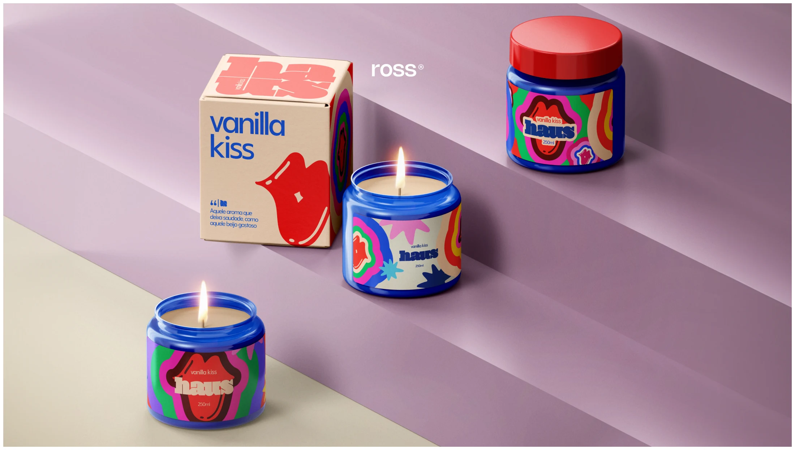

Haus
2025
Uma identidade que ganha novas camadas: design de etiquetas para transformar fragrâncias em expressão visual.
- Projeto
- Design de etiquetas
- Cliente
- Haus
- Ano
- 2025
- Categorias
- Design
- Atuação
- Design gráfico e desdobramento de identidade visual
A essência encontra a forma
A partir da identidade visual já existente da Haus, o projeto desenvolveu etiquetas para velas aromáticas. O trabalho traduz as particularidades de cada fragrância em combinações de cor, tipografia e composição, mantendo a unidade da marca em toda a linha.
Uma família, diferentes sensações
Vanilla Kiss, Escândalo e Me Chama de Sakura recebem personalidades visuais próprias dentro do mesmo sistema. As aplicações exploram o encontro entre rótulo e embalagem, valorizando a apresentação do produto e criando uma leitura clara e reconhecível no ponto de contato com o consumidor.